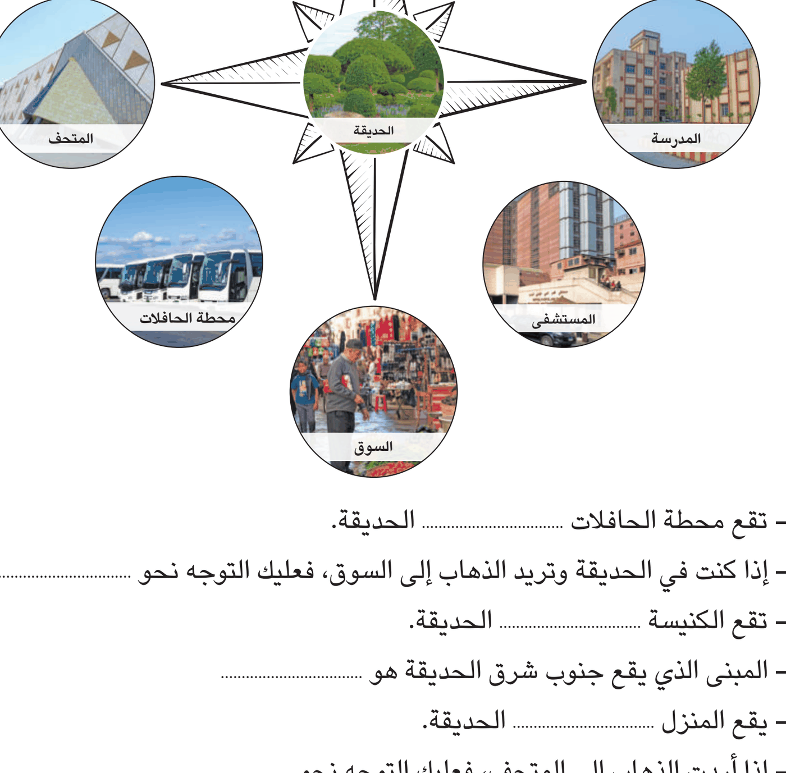
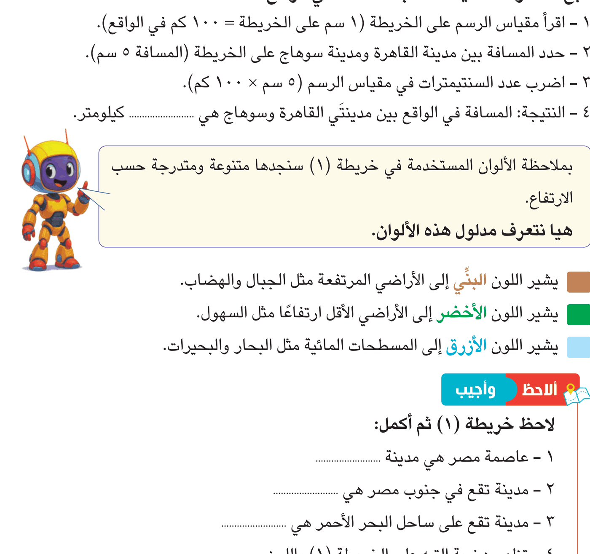
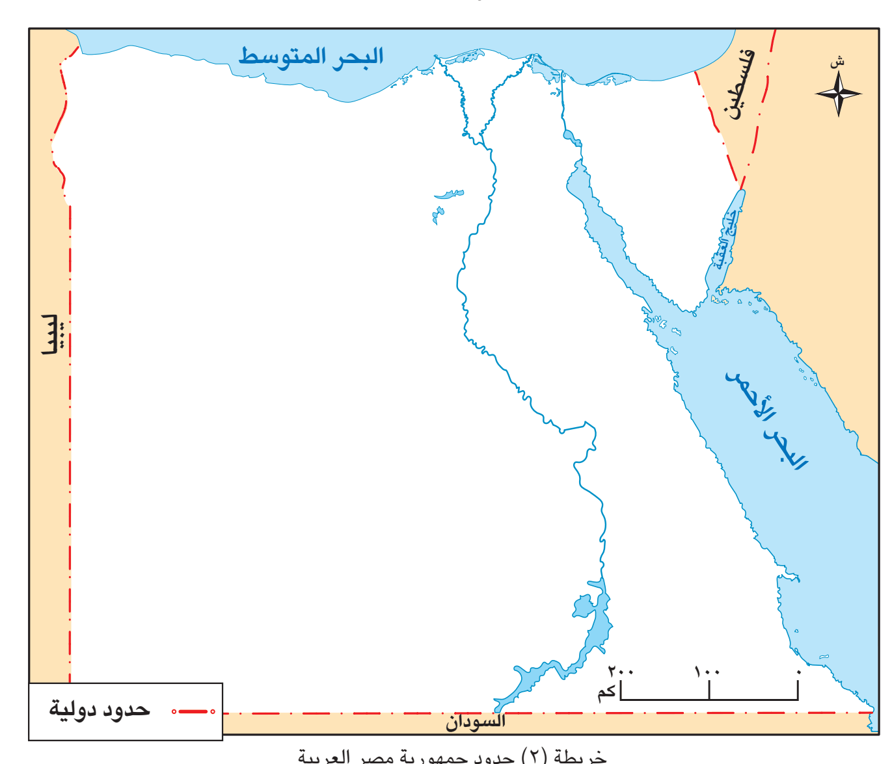
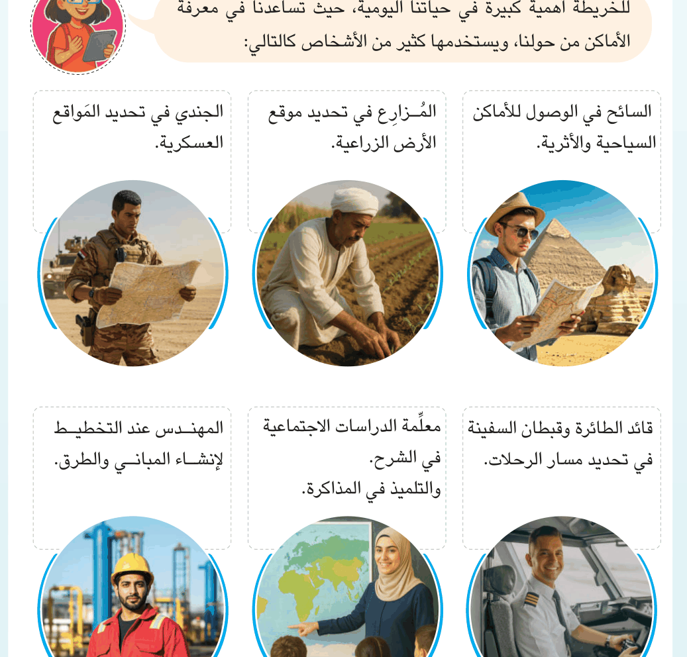
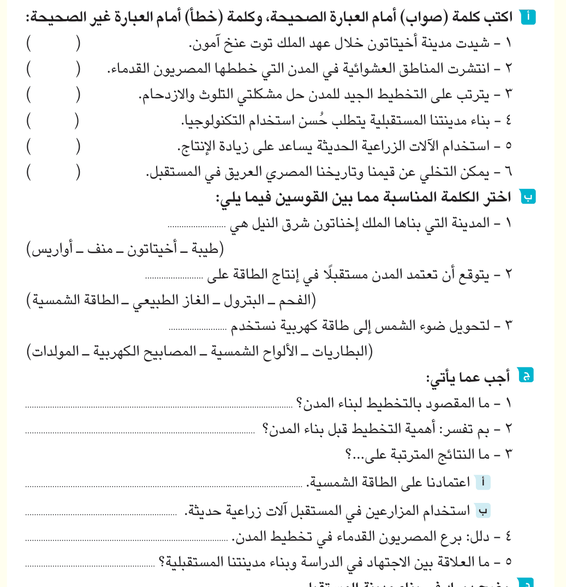
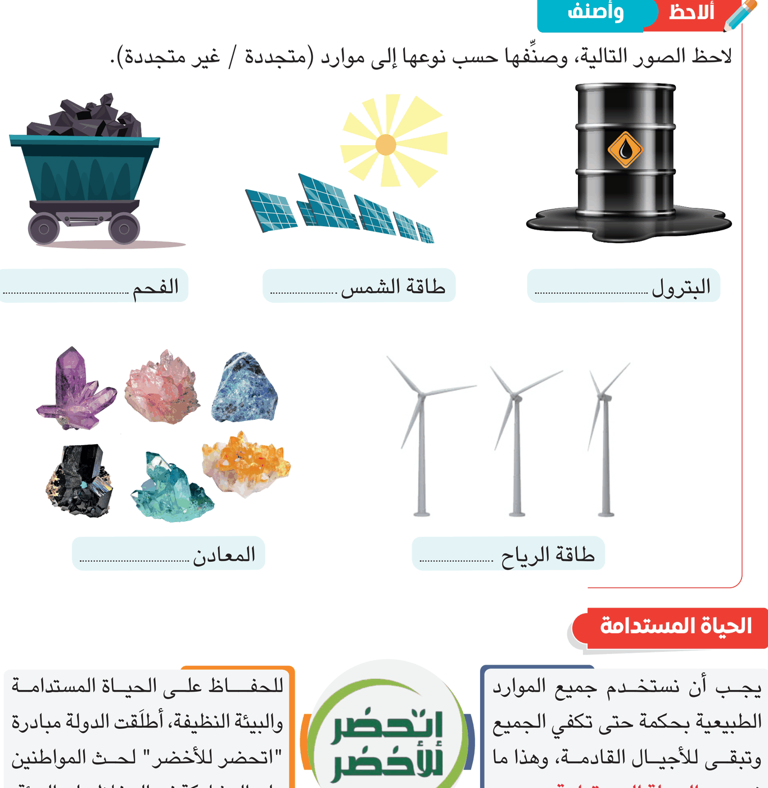
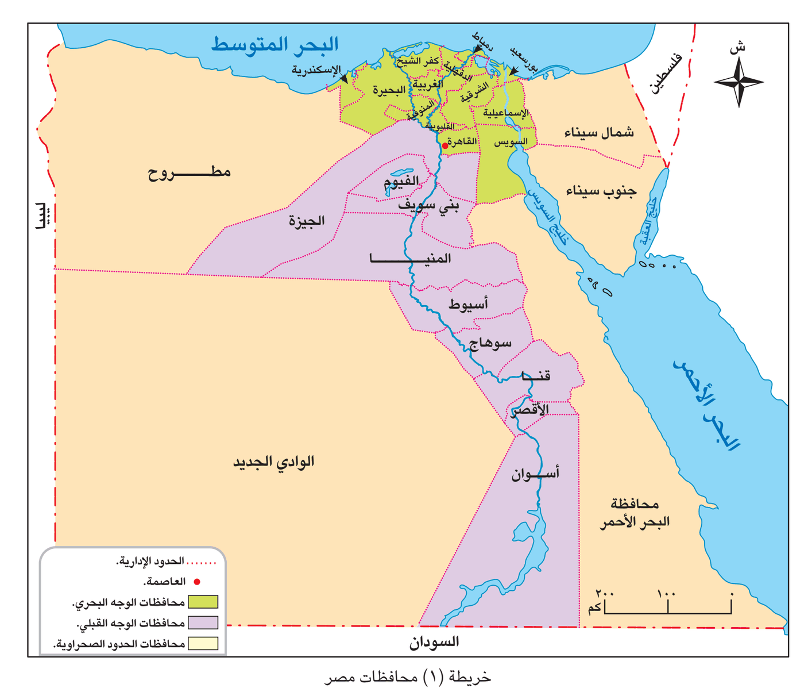
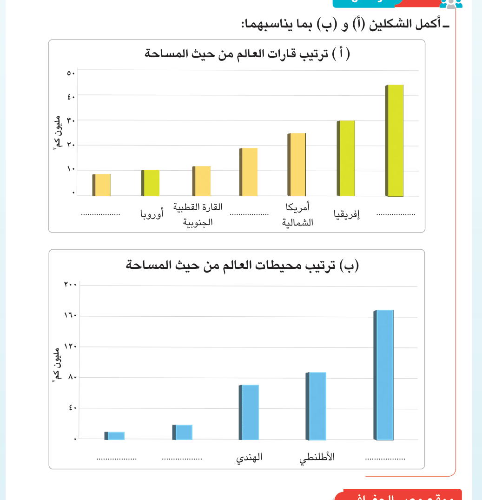
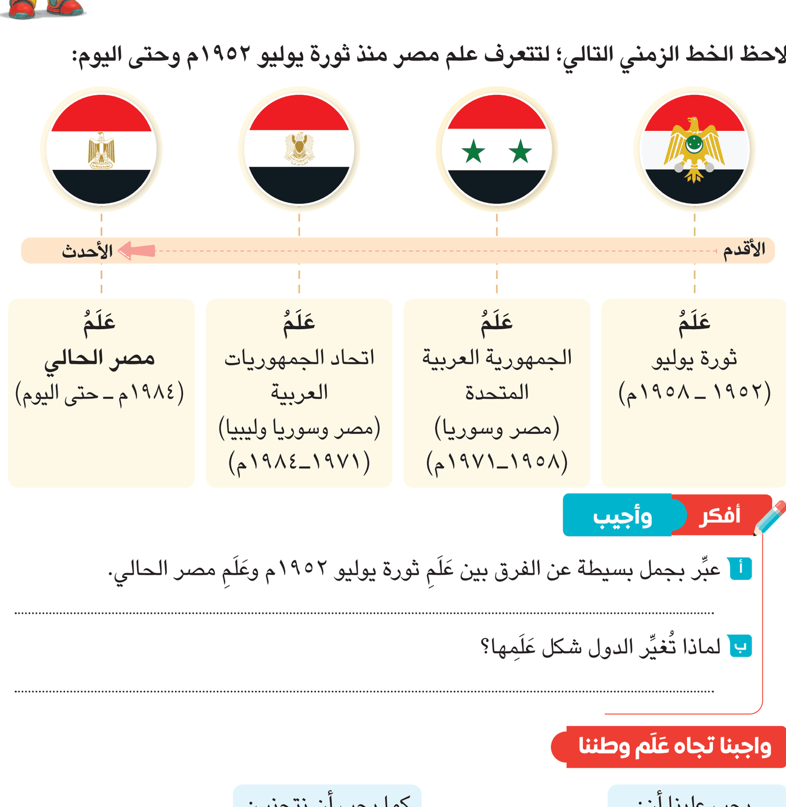
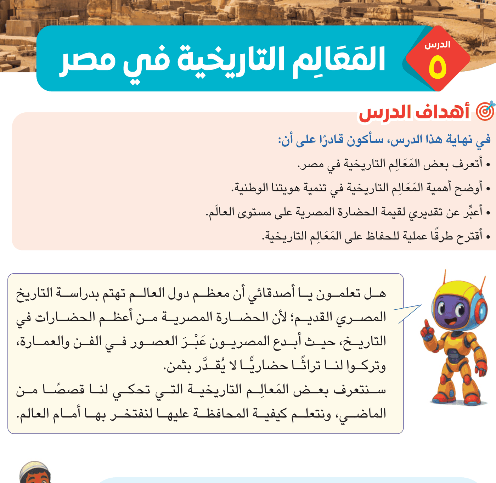

دليل الدراسات الاجتماعية التفاعلي الشامل
الوحدات الثلاث بأجزائها الثمانية كاملة: الخرائط، البيئات المصرية، محافظتي، وعلم مصر، بالصور والخرائط التوضيحية.
ورطة البوصلة، مقياس الرسم، خطوط الطول ودوائر العرض، والصور الجوية والفضائية.



قناة السويس وشريان التجارة، موقع مصر الجغرافي، الفرق بين الحقيقة والرأي.



الجبال والهضاب والسهول والمنخفضات، بيئات مصر: الصحراوية والزراعية والساحلية.



أدوات قياس الطقس (الأنيمومتر والترمومتر)، الموارد المتجددة وغير المتجددة وتلوث البيئة.


محافظات مصر الـ 27، القاهرة العاصمة، ألوان ورموز علم مصر، وشعار المحافظة.



صناعة الفخار والخيامية والسجاد والزجاج، ومبادرات الدولة لتطوير الريف وحياة كريمة.


طلعت حرب وتأسيس بنك مصر 1920، البنك المركزي المصري، والفرق بين الحاجات والرغبات.

حقوق الطفل في الدستور المصري، د. طه حسين، وجمال حمدان شخصيات مصرية مؤثرة.


كل ملازم الامتحانات والمراجعة النهائية للمادة مع نماذج الإجابة التفصيلية.